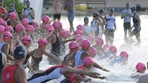

La natation
Bien que les entrainements se fassent généralement en piscine, les compétitions sont organisées pour une épreuve de nage en eau libre qui peut se dérouler en mer, en lac ou étang, voire en rivière. Depuis 1987, une combinaison de néoprène est obligatoire lorsque la température de l'eau est inférieure à 16 degrés, au choix du triathlète entre 16 degrés et 24 degrés et interdite au-dessus de 24 degrés. Le dêpart est effectué soit de manière massive (mass-start), soit par vague successive déterminée par l'organisation.